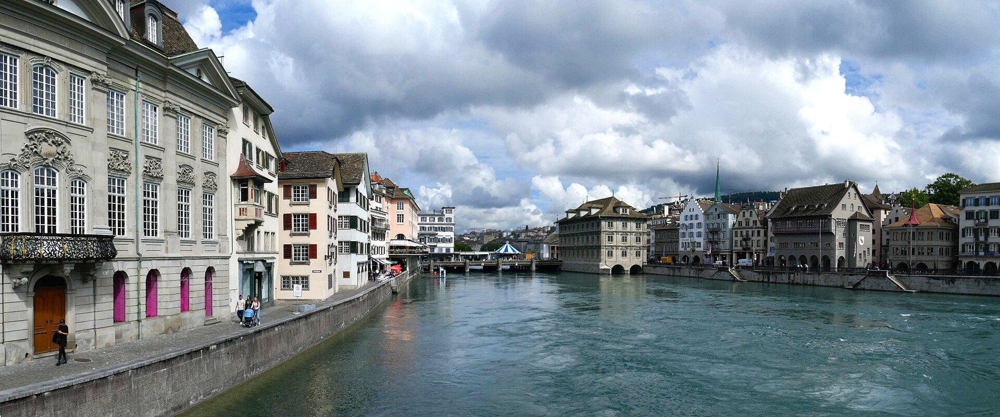
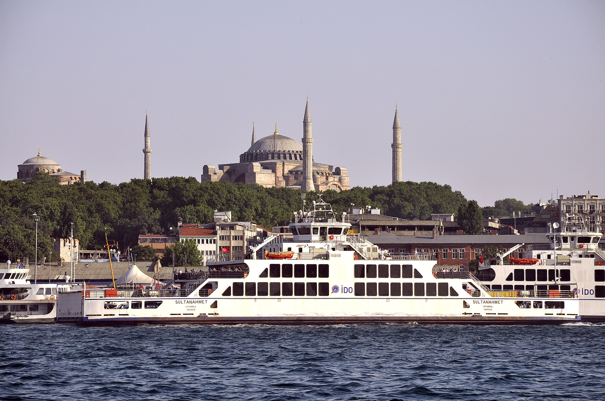

A. Ebrar Kızıloğlu
NLP researcher at TU Munich, co-creator of TabiBERT
I am pursuing an MSc in Informatics at TU Munich, Germany.
Previously, I graduated in Computer Engineering from Boğaziçi University, Türkiye.
I’m interested in NLP, especially how word structure shapes what small language models learn, and I’m open to research collaborations.
I co-created TabiBERT, a modern Turkish encoder pre-trained on 1T tokens.
News
- 17 Oct 2026 Talk Presented TabiBERT at LatentShift 2026, in the first edition. Speaker profile →
- Sep 2026 Collab Co-supervising a bachelor thesis on Turkish morphological generation at Boğaziçi.
- Dec 2025 Paper TabiBERT & TabiBench preprint on arXiv.
Path
- 2025 – nowMSc Informatics & HiWi researcherTU Munich, Germany
- 2025Research AssistantTABILAB, Boğaziçi University, Türkiye
- 2023Research Intern, Text-to-SpeechGoogle UK
- 2022STEP Intern, CalendarGoogle Switzerland
- 2020 – 2025BSc Computer EngineeringBoğaziçi University, Türkiye
- 2019Silver Medal, EGMORepresenting Türkiye
Where I’ve studied and worked


Say merhaba
Up for a research collaboration or a chat about NLP?
ebrarkiziloglu@gmail.com